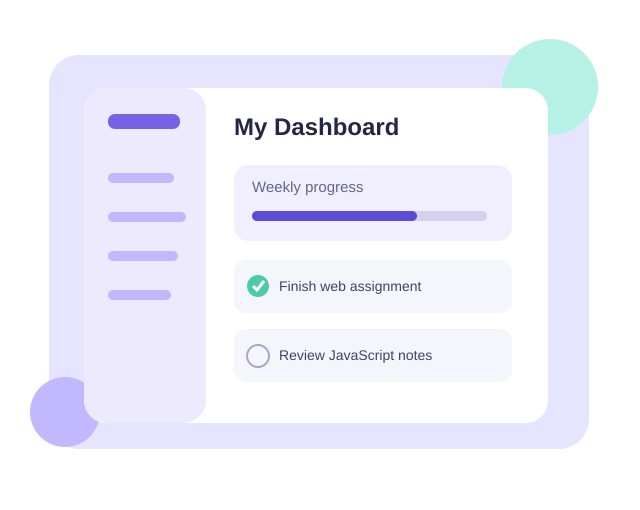

Daily study planner
Add tasks, mark them complete, and see how much progress you've made.
Keep your study goals organized, explore useful courses, and make every day count. All in one simple place.

StudyFlow combines small, useful tools for a more organized learning experience.
Add tasks, mark them complete, and see how much progress you've made.
Search and filter six starter courses by category or keyword.
Switch between light and dark modes, even on small screens.
Create a free local demo profile and start tracking goals today.